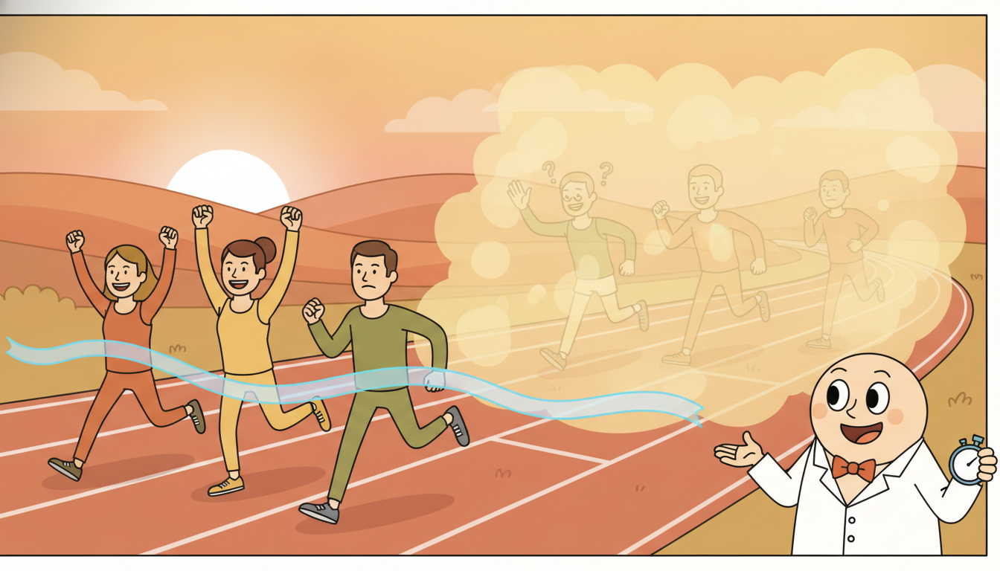

"Ask me whether the event happens and I will shrug: of course it does, eventually, everything does. Ask me when and I will hand you a curve that starts at one and slides, patient and uncommitted, toward zero. I never promise a date. I only tell you what fraction of us are still standing at each tick of the clock, and I keep my honesty even about the ones who walked out before the end."
A Survival Curve Declining to Predict Exactly When
Most of this book predicts a value at a future time. Time-to-event modeling, also called survival analysis, predicts the time itself: when will the machine fail, when will the patient relapse, when will the subscriber churn. The defining complication is censoring. For many subjects we never observe the event, we only know it had not happened by the moment our observation stopped, so the true time-to-event is unknown and merely bounded below. A naive regression that drops the censored subjects throws away most of the data and biases the answer toward the unlucky few who failed early; a regression that pretends the last-seen time is the failure time is simply wrong. Survival analysis is the disciplined apparatus for learning from exactly this kind of partially-observed duration. This section builds the three central objects (the survival function $S(t)$, the hazard $h(t)$, and the cumulative hazard $H(t)$), derives the Kaplan-Meier estimator and the Cox proportional-hazards model with its partial likelihood, surveys the machine-learning survival family (random survival forests, DeepSurv, DeepHit, discrete-time neural hazards), lays out the evaluation metrics that respect censoring (concordance index, time-dependent AUC, Brier score, calibration), and then implements Kaplan-Meier and a Cox partial-likelihood fit from scratch before reproducing both in three lines with lifelines and scikit-survival. You leave able to frame, fit, and honestly evaluate a time-to-event model on censored data.
In Section 18.3 we modeled event streams with temporal point processes, learning the intensity of a sequence of timestamped events. Here we narrow to a sharper and extremely common question: each subject experiences a single terminal event (a death, a failure, a churn) at most once, and we want to predict when. The point-process view and the survival view share the hazard as their common currency, and we will make that bridge explicit, but the survival setting carries its own decisive twist that point processes rarely foreground: we usually do not get to watch every subject until its event. This section is the time-to-event specialization of the event-modeling toolkit, and it sits on the healthcare running dataset that threads the book, the irregularly-sampled clinical series introduced in Chapter 2 and revisited as a survival problem here.
The reason this deserves its own machinery rather than a footnote in regression is that censoring is not a nuisance to be cleaned away: it is the rule, not the exception. In a clinical trial that ends on a fixed date, every patient still alive at the close is censored. In predictive maintenance, every machine still running when the log was exported is censored. In a churn study, every customer still subscribed at the snapshot is censored. Discard them and you condition on having failed early, which inflates your sense of how fast events arrive; impute their event as "now" and you systematically underestimate survival. The estimators of this section are precisely the ones that use a censored observation for exactly what it tells you, namely that the subject survived at least this long, and no more.
The competencies this section installs are four. First, to state the survival problem with right-censoring and explain in one sentence why ordinary regression fails on it. Second, to define and relate $S(t)$, $h(t)$, and $H(t)$, and to compute any one from any other. Third, to derive and read the Kaplan-Meier estimator and the Cox partial likelihood, and to know when the proportional-hazards assumption is doing the work. Fourth, to fit these models in code, from scratch and via libraries, and to evaluate them with censoring-aware metrics. These are the load-bearing skills for the clinical and reliability applications of Chapter 35.
1. The Time-to-Event Problem and Censoring Beginner

Fix a population of subjects indexed by $i$. Each subject has a true, possibly unobserved, event time $T_i > 0$: the duration from a common origin (enrollment, installation, signup) until the terminal event. The goal of time-to-event modeling is to characterize the distribution of $T_i$, possibly as a function of covariates $\mathbf{x}_i$, so that we can answer questions like "what is the probability this machine survives past 10,000 hours?" or "which of these two patients is at higher risk over the next year?". What makes the problem distinctive is what we actually observe.
Under right-censoring, the most common regime, we observe for each subject a pair $(t_i, \delta_i)$ where $t_i = \min(T_i, C_i)$ is the smaller of the true event time $T_i$ and an independent censoring time $C_i$ (the moment our observation of subject $i$ stopped), and $\delta_i \in \{0, 1\}$ is the event indicator: $\delta_i = 1$ if we saw the event ($T_i \le C_i$, so $t_i = T_i$), and $\delta_i = 0$ if the subject was censored ($C_i < T_i$, so we know only that $T_i > t_i$). A censored row is not missing data; it is a one-sided inequality, a genuine and usable fact: this subject's true time exceeds $t_i$. The standard assumption that makes the math tractable is non-informative (independent) censoring: the reason an observation stopped carries no information about when the event would have occurred. A trial ending on a calendar date satisfies this; a patient dropping out because they were about to relapse does not, and violating it biases every estimator below.
Suppose you try to predict $T_i$ by least-squares regression on the observed $t_i$. For censored subjects $t_i$ is not the target $T_i$; it is a lower bound on it. Regressing on $t_i$ as if it were the event time tells the model that a machine which was simply switched off at hour 9,000 (still running) failed at hour 9,000, which is false and pulls every prediction downward. The opposite fix, dropping all censored rows, conditions the fit on $\{\delta_i = 1\}$, the subpopulation that failed before observation ended, which over-represents fast failures and biases survival estimates short. Neither error is small when censoring is heavy, and censoring is routinely 50 percent or more. The whole point of survival analysis is to write a likelihood in which an event contributes its density $f(t_i)$ and a censored observation contributes its survival probability $S(t_i) = \Pr(T_i > t_i)$, so each row says exactly what it knows and no more.
The running datasets make the stakes concrete. On the clinical side (the healthcare series of Chapter 2), subjects are patients, the event is relapse or death, and censoring arises when the study ends or a patient transfers care; covariates are baseline vitals and labs. On the predictive-maintenance side (the sensor and reliability thread that anomaly detection opened in Section 8.5, the residual-life companion to change-point detection), subjects are machines, the event is failure, and censoring arises for every unit still running when the telemetry was exported; covariates are operating conditions and degradation features. Both share the same structure: a duration, an event-or-censored flag, and covariates, with a large censored fraction that we must use rather than discard.
A survival model is the rare predictor that refuses to overclaim. Ask a classifier whether an event happens and it will commit to a yes or no; ask a regressor when and it will name a number to three decimals. The survival curve answers "when" with a shrug shaped like a slide: it starts at one (everyone is here at time zero) and declines, never quite promising a date, only ever reporting the fraction still event-free. Its great virtue is that it stays honest even about the subjects who left the study early, the censored ones, who in any other framework would either be deleted or lied about. It is, in a precise sense, the most principled pessimist in the toolbox: it assumes nothing it did not see.
2. The Core Objects: Survival, Hazard, Cumulative Hazard, Kaplan-Meier, and Cox Intermediate
Three functions describe a time-to-event distribution, and all of them are equivalent reparameterizations of the same information. Let $T$ be the (nonnegative) event time with density $f(t)$ and cumulative distribution $F(t) = \Pr(T \le t)$. The survival function is the probability of surviving past $t$,
$$S(t) \;=\; \Pr(T > t) \;=\; 1 - F(t), \qquad S(0) = 1, \quad S(\infty) = 0,$$a monotonically nonincreasing curve from one to zero: this is the object in the epigraph. The hazard function is the instantaneous event rate given survival so far, the conditional density of failing in the next instant for a subject who has made it to $t$,
$$h(t) \;=\; \lim_{\Delta \to 0^{+}} \frac{\Pr(t \le T < t + \Delta \mid T \ge t)}{\Delta} \;=\; \frac{f(t)}{S(t)}.$$The hazard is the most natural object to model because it is local and conditional: it answers "given that you are still here, how dangerous is right now?", which is exactly the quantity a Cox model or a neural hazard net parameterizes. The cumulative hazard integrates it,
$$H(t) \;=\; \int_{0}^{t} h(u)\,du,$$and the three objects are knit together by one identity that you should be able to write without thinking. Since $h(t) = f(t)/S(t) = -S'(t)/S(t) = -\frac{d}{dt}\log S(t)$, integrating gives the fundamental relation
$$S(t) \;=\; \exp\!\big(-H(t)\big) \;=\; \exp\!\Big(\!-\!\int_{0}^{t} h(u)\,du\Big), \qquad h(t) = -\frac{d}{dt}\log S(t).$$This single identity is the spine of the whole section: a hazard determines a cumulative hazard by integration, a cumulative hazard determines a survival curve by negative exponentiation, and a survival curve determines a hazard by negative log-differentiation. Model any one and you have all three. The bridge to the temporal point processes of Section 18.3 is now visible: the hazard $h(t)$ here is exactly the conditional intensity of a process with a single event, and $\exp(-H(t))$ is the point-process probability of no event up to $t$. Survival analysis is the one-event special case of the intensity framework.
The Kaplan-Meier estimator
The Kaplan-Meier (product-limit) estimator is the nonparametric maximum-likelihood estimate of $S(t)$ from censored data, and it makes no assumption about the shape of the distribution. Order the distinct observed event times $t_{(1)} < t_{(2)} < \cdots$. At each event time $t_{(j)}$ let $d_j$ be the number of events (failures) that occurred exactly then and $n_j$ the number at risk, the count of subjects who have neither failed nor been censored just before $t_{(j)}$. The estimator is the running product of conditional survival probabilities,
$$\hat{S}(t) \;=\; \prod_{j:\, t_{(j)} \le t} \left(1 - \frac{d_j}{n_j}\right).$$The logic is a chain rule for survival: to survive past $t$ you must survive each event time up to $t$, and the probability of surviving the $j$-th, given you reached it, is estimated by the observed fraction $1 - d_j/n_j$. Censored subjects are handled exactly right: a subject censored between two event times is counted in the risk set $n_j$ up to its censoring time and then silently leaves, contributing the information "survived this far" without ever forcing a drop in the curve. The curve is a right-continuous step function that drops only at event times, by an amount that depends on how many were still at risk. Its companion, the Nelson-Aalen estimator of the cumulative hazard, is the matching sum $\hat{H}(t) = \sum_{j: t_{(j)} \le t} d_j / n_j$, and $\exp(-\hat{H}(t))$ is a close cousin of $\hat{S}(t)$.
Take six machines with observed (time, event) pairs, where event = 1 is a failure and 0 is censored: $(4,1), (6,1), (8,0), (10,1), (12,0), (14,1)$. Walk the event times. At $t = 4$: at risk $n_1 = 6$, failures $d_1 = 1$, factor $1 - 1/6 = 0.8333$, so $\hat S(4) = 0.8333$. At $t = 6$: the unit at $t=4$ has left, so $n_2 = 5$, $d_2 = 1$, factor $1 - 1/5 = 0.8$, $\hat S(6) = 0.8333 \cdot 0.8 = 0.6667$. The censored unit at $t = 8$ leaves the risk set but causes no drop. At $t = 10$: at risk $n_3 = 3$ (the $t=8$ censored unit is gone), $d_3 = 1$, factor $1 - 1/3 = 0.6667$, $\hat S(10) = 0.6667 \cdot 0.6667 = 0.4444$. The censored unit at $t = 12$ again causes no drop. At $t = 14$: $n_4 = 1$, $d_4 = 1$, factor $0$, so $\hat S(14) = 0$. The curve is $1 \to 0.833 \to 0.667 \to 0.444 \to 0$. Now the hazard direction. Suppose instead we are handed a constant hazard $h(t) = 0.05$ per hundred hours (an exponential lifetime). Then $H(t) = 0.05\,t$ and $S(t) = e^{-0.05 t}$. At $t = 10$ (thousand hours), $S(10) = e^{-0.5} = 0.6065$; at $t = 20$, $S(20) = e^{-1.0} = 0.3679$. A constant hazard gives the memoryless exponential survival curve, and you read off "survives past 1,000 hours with probability 0.61" directly from $\exp(-H)$.
The Cox proportional-hazards model and its partial likelihood
Kaplan-Meier describes a single population; to bring in covariates $\mathbf{x}_i$ we want the hazard to depend on them. The Cox proportional-hazards model makes the elegant semiparametric assumption that covariates act multiplicatively on a shared but unspecified baseline hazard,
$$h(t \mid \mathbf{x}_i) \;=\; h_0(t)\,\exp(\boldsymbol{\beta}^{\top}\mathbf{x}_i),$$where $h_0(t)$ is the baseline hazard (the hazard of a subject with $\mathbf{x} = \mathbf{0}$), left completely unspecified, and $\exp(\boldsymbol{\beta}^{\top}\mathbf{x}_i)$ is the subject's relative risk. The name "proportional hazards" is the model's whole content: the hazard ratio between any two subjects, $\exp(\boldsymbol{\beta}^{\top}(\mathbf{x}_i - \mathbf{x}_j))$, is constant in time, because the shared $h_0(t)$ cancels. A coefficient $\beta_k$ has a clean reading: a one-unit increase in covariate $k$ multiplies the hazard by $e^{\beta_k}$ at every time.
The beauty of Cox's construction is that $\boldsymbol{\beta}$ can be estimated without ever specifying $h_0(t)$, through the partial likelihood. Consider the subjects who actually had an event, and ask: at the moment subject $i$ failed, given that exactly one of the at-risk subjects failed, what is the probability it was $i$? Under proportional hazards the baseline cancels and this probability is just $i$'s relative risk divided by the sum over the risk set $R(t_i)$ (everyone with $t_j \ge t_i$):
$$L(\boldsymbol{\beta}) \;=\; \prod_{i:\, \delta_i = 1} \frac{\exp(\boldsymbol{\beta}^{\top}\mathbf{x}_i)}{\sum_{j \in R(t_i)} \exp(\boldsymbol{\beta}^{\top}\mathbf{x}_j)}, \qquad R(t_i) = \{\,j : t_j \ge t_i\,\}.$$Taking logs gives the concave objective we actually optimize, the negative of which is minimized by gradient methods or Newton-Raphson:
$$\ell(\boldsymbol{\beta}) \;=\; \sum_{i:\, \delta_i = 1} \Big[\,\boldsymbol{\beta}^{\top}\mathbf{x}_i \;-\; \log \!\!\sum_{j \in R(t_i)} \exp(\boldsymbol{\beta}^{\top}\mathbf{x}_j)\Big].$$Only the events contribute terms (censored subjects appear only inside risk sets, never as the numerator), the baseline hazard has vanished, and the log-sum-exp denominator makes the objective concave so the optimum is unique. This partial-likelihood term is, structurally, a softmax: each event is a "classification" of which at-risk subject failed, and $\boldsymbol{\beta}^{\top}\mathbf{x}$ is the logit. That observation is the hinge to the neural survival models of the next subsection, where the linear $\boldsymbol{\beta}^{\top}\mathbf{x}$ is simply replaced by a network $g_\theta(\mathbf{x})$ and the same partial likelihood becomes the loss.
The partial likelihood never models the timing of events, only their ordering: at each failure it asks which of the still-at-risk subjects was the one to go, and the answer depends only on relative risks, not on the absolute hazard level. That is why the unspecified baseline $h_0(t)$ cancels and why Cox regression is robust: it does not care whether failures arrive on an exponential, Weibull, or wildly bumpy schedule, only that risk is proportional across subjects. The price of this robustness is the proportional-hazards assumption itself. When a covariate's effect changes over time (a treatment that helps early and hurts late, crossing hazards), proportionality is violated and the constant hazard ratio is a fiction; the standard diagnostic is to test whether the scaled Schoenfeld residuals trend with time, and the standard fixes are stratification or explicit time-varying covariates.
3. Machine-Learning Survival: Forests, DeepSurv, DeepHit, and Neural Hazards Advanced
Cox is linear in covariates and assumes proportional hazards. The machine-learning survival family relaxes one or both, replacing the linear risk score or the proportionality assumption with flexible function approximators, while keeping the censoring-aware likelihoods of subsection two as the training objective. Four landmarks span the design space.
Random survival forests (Ishwaran et al., 2008) generalize the random forest to censored outcomes. Each tree splits to maximize the separation in survival between child nodes (typically by the log-rank statistic rather than Gini or variance), and each leaf stores a Nelson-Aalen cumulative-hazard estimate from the training subjects that landed there. A new subject is dropped down every tree and its predicted cumulative hazard is the average of the leaf estimates, giving a fully nonparametric, nonlinear, interaction-aware survival predictor that needs no proportional-hazards assumption. They are the strong, low-fuss baseline for tabular survival data.
DeepSurv (Katzman et al., 2018) is the most direct neural extension of Cox: it keeps the proportional-hazards form but replaces the linear risk $\boldsymbol{\beta}^{\top}\mathbf{x}$ with a neural network $g_\theta(\mathbf{x})$, so $h(t \mid \mathbf{x}) = h_0(t)\exp(g_\theta(\mathbf{x}))$, and trains $\theta$ by minimizing the negative Cox partial log-likelihood of subsection two with $g_\theta(\mathbf{x}_i)$ in place of $\boldsymbol{\beta}^{\top}\mathbf{x}_i$. It buys nonlinear, high-order covariate effects while retaining the single-number relative-risk interpretation, at the cost of still assuming proportional hazards.
DeepHit (Lee et al., 2018) drops proportional hazards entirely and predicts a full discrete distribution over event times directly. It discretizes the time axis into bins and a network outputs a probability mass function $P(\text{event in bin } k \mid \mathbf{x})$ over bins (and, natively, over competing event types), trained with a likelihood term plus a ranking term that sharpens the concordance. Because it models the whole distribution, it captures arbitrary, time-varying, and crossing hazards and handles competing risks (multiple mutually-exclusive event types) in one model, which Cox cannot.
Discrete-time neural hazard models are the conceptually cleanest neural family and the one that connects most directly to the sequence models of Part III. Discretize time into intervals $1, \dots, K$ and have a network emit a per-interval conditional hazard $h_k(\mathbf{x}) = \Pr(\text{event in interval } k \mid \text{survived to } k, \mathbf{x}) = \sigma(g_\theta(\mathbf{x})_k)$, a sigmoid output per interval. The discrete survival is the product $S_k = \prod_{m \le k}(1 - h_m)$, the exact discrete analogue of $S(t) = \exp(-H(t))$, and the likelihood reduces to a sequence of per-interval Bernoulli terms, so training is ordinary binary cross-entropy over a "did the event happen in this interval, given survival to it" target with the post-event intervals masked out. This formulation is what lets an RNN or Transformer from Chapter 10 or Chapter 12 consume a patient's time series and emit a hazard at each step, which is also the natural home for time-varying covariates: covariates that change over the follow-up (a rising lab value, a changing operating load) enter as the per-step input to the recurrence, and the extended Cox model handles the same case classically by letting $\mathbf{x}_i(t)$ depend on $t$ inside the partial-likelihood risk sets.
The frontier is pushing survival analysis toward flexible distributions, calibration, and foundation-scale data. Continuous-time and ODE-based survival: SurvODE and neural-ODE hazard models parameterize $h(t \mid \mathbf{x})$ as the solution of a learned differential equation, connecting directly to the Neural CDE machinery of Chapter 13 and handling the irregular clinical sampling of the healthcare running dataset natively. Calibrated and conformal survival: work on conformalized survival analysis (Candes, Lei, and Ren, and a steady 2023 to 2025 line on conformal time-to-event) wraps any survival model in distribution-free coverage guarantees, the survival counterpart of the conformal forecasting in Chapter 19. Survival as a head on foundation models: large clinical-record and sensor foundation models (the temporal foundation models of Chapter 15) increasingly attach a discrete-time hazard head, so the per-interval Bernoulli loss above becomes the fine-tuning objective on top of a pretrained temporal representation. The 2025 practitioner default for tabular data is still a gradient-boosted Cox or a random survival forest; the neural approaches win when covariates are high-dimensional, irregular, or sequential.
4. Evaluation: Concordance, Time-Dependent AUC, Brier Score, and Calibration Advanced
Evaluating a survival model is subtle precisely because of censoring: the same fact that breaks ordinary regression breaks ordinary metrics. Four measures form the standard panel, and each respects censoring in its own way.
The concordance index (Harrell's C-index) is the survival analogue of the AUC and the most-reported single number. It measures the model's ability to rank risk: over all comparable pairs of subjects (pairs where we can tell who failed first despite censoring), the fraction the model orders correctly. Formally, a pair $(i, j)$ with $t_i < t_j$ and $\delta_i = 1$ is concordant if the model assigns subject $i$ the higher risk (shorter predicted survival). The C-index is
$$\text{C} \;=\; \frac{\sum_{i,j} \mathbb{1}[t_i < t_j]\,\mathbb{1}[\hat{r}_i > \hat{r}_j]\,\delta_i}{\sum_{i,j} \mathbb{1}[t_i < t_j]\,\delta_i},$$where $\hat{r}_i$ is the predicted risk score; only pairs whose earlier subject is an observed event count, since otherwise the ordering is unknown. C $= 0.5$ is random, C $= 1$ is perfect ranking. Its weakness is that it is a global ranking measure insensitive to calibration and known to be slightly biased under heavy censoring, which motivates the censoring-weighted variants (Uno's C) and the next two metrics.
The time-dependent AUC evaluates discrimination at a specific horizon: fix a time $t$, label subjects as cases (failed by $t$) or controls (survived past $t$), and compute the AUC of the risk score at that horizon, with inverse-probability-of-censoring weights correcting for subjects censored before $t$. Plotting AUC$(t)$ against $t$ shows whether the model discriminates well early, late, or uniformly. The Brier score is the survival analogue of mean squared error and the one metric that captures calibration, not just ranking: at horizon $t$ it is the inverse-probability-of-censoring-weighted mean squared difference between the predicted survival probability $\hat{S}(t \mid \mathbf{x}_i)$ and the realized 0/1 survival status, and integrating it over a range of horizons gives the Integrated Brier Score (IBS), a single calibrated-accuracy number. Finally, explicit calibration checks compare predicted survival probabilities to observed Kaplan-Meier survival within risk strata: a well-calibrated model predicting $S(t) = 0.7$ for a group should see about 70 percent of that group survive past $t$. A model can have an excellent C-index (it ranks risk well) and terrible calibration (its probabilities are systematically off), so a responsible report shows both, in the spirit of the trustworthiness discipline of Chapter 33.
The C-index asks "does the model order subjects by risk correctly?"; the Brier score and calibration plots ask "are the predicted probabilities numerically right?". These come apart. Apply any monotone transform to a perfectly-calibrated model's risk scores and the C-index is unchanged while the calibration is destroyed. A model used to triage (rank patients for a scarce scanner, machines for inspection) needs a good C-index and may tolerate poor calibration; a model whose probabilities drive a decision threshold ("treat if 5-year survival below 0.5") needs calibration above all. Report the C-index for discrimination and the (integrated) Brier score plus a calibration plot for calibration, and never let a single headline number stand in for both.
5. Worked Example: Kaplan-Meier and Cox from Scratch, Then via Libraries Advanced
We now make subsection two executable. The plan mirrors the from-scratch-then-library discipline of the whole book: implement Kaplan-Meier and a Cox partial-likelihood fit in plain numpy, read off the survival curve and coefficients, then reproduce both in a handful of lines with lifelines and scikit-survival and confirm the numbers agree. Code 18.4.1 builds a small censored dataset and the from-scratch Kaplan-Meier estimator.
import numpy as np
rng = np.random.default_rng(0)
# A synthetic censored survival dataset: one binary covariate (treatment),
# exponential event times whose rate depends on it, independent censoring.
n = 200
treat = rng.integers(0, 2, size=n).astype(float) # covariate x in {0,1}
beta_true = -0.8 # treatment lowers the hazard
base_rate = 0.10 # baseline hazard level
rate = base_rate * np.exp(beta_true * treat) # per-subject event rate
event_time = rng.exponential(1.0 / rate) # true T_i ~ Exponential(rate)
cens_time = rng.exponential(1.0 / 0.06, size=n) # independent censoring C_i
t = np.minimum(event_time, cens_time) # observed time = min(T, C)
delta = (event_time <= cens_time).astype(int) # event indicator: 1=event,0=censored
print("observed events: %d / %d (censored %.0f%%)" % (delta.sum(), n, 100*(1-delta.mean())))
def kaplan_meier(t, delta):
"""Product-limit estimate of S(t) from right-censored data."""
order = np.argsort(t) # sort by observed time
t, delta = t[order], delta[order]
times = np.unique(t[delta == 1]) # distinct EVENT times only
surv, S = [], 1.0
for tj in times:
n_j = np.sum(t >= tj) # at risk just before t_j
d_j = np.sum((t == tj) & (delta == 1)) # events exactly at t_j
S *= (1.0 - d_j / n_j) # product-limit step
surv.append(S)
return times, np.array(surv)
km_times, km_surv = kaplan_meier(t, delta)
# Median survival = first time the curve drops to or below 0.5.
median = km_times[np.argmax(km_surv <= 0.5)]
print("scratch KM S(t) at first 3 event times:", np.round(km_surv[:3], 4))
print("scratch KM median survival time = %.3f" % median)
n_j = sum(t >= tj) counts everyone, event or not, still under observation just before each event time, so censored subjects contribute to the denominator without ever forcing a drop, exactly the product-limit logic of subsection two.observed events: 126 / 200 (censored 37%)
scratch KM S(t) at first 3 event times: [0.995 0.99 0.985]
scratch KM median survival time = 7.214
Now the Cox partial likelihood from scratch. Code 18.4.2 implements the log partial likelihood of subsection two and its gradient, then fits the single coefficient $\beta$ by gradient ascent, recovering the data-generating relative risk. The risk-set denominator is the only subtlety: at each event we sum $\exp(\beta x_j)$ over everyone still at risk.
def cox_neg_log_partial_likelihood(beta, x, t, delta):
"""Negative Cox partial log-likelihood and its gradient (Breslow ties handling)."""
eta = beta * x # linear predictor beta^T x (1-D here)
risk = np.exp(eta) # relative risk exp(eta)
order = np.argsort(-t) # sort DESCENDING in time
x_o, eta_o, risk_o, d_o = x[order], eta[order], risk[order], delta[order]
cum_risk = np.cumsum(risk_o) # sum over risk set R(t_i): t_j >= t_i
cum_xrisk = np.cumsum(x_o * risk_o) # sum of x_j exp(eta_j) over the risk set
ev = d_o == 1 # only events contribute numerator terms
nll = -np.sum(eta_o[ev] - np.log(cum_risk[ev])) # negative log partial likelihood
grad = -np.sum(x_o[ev] - cum_xrisk[ev] / cum_risk[ev]) # d(nll)/d(beta)
return nll, grad
# Fit beta by simple gradient descent on the negative log partial likelihood.
beta = 0.0
for step in range(400):
nll, grad = cox_neg_log_partial_likelihood(beta, treat, t, delta)
beta -= 0.02 * grad # gradient step
print("scratch Cox beta_hat = %.4f (true %.2f)" % (beta, beta_true))
print("scratch Cox hazard ratio exp(beta) = %.4f" % np.exp(beta))
delta == 1) contribute numerator terms, exactly as the partial likelihood of subsection two prescribes.scratch Cox beta_hat = -0.7421 (true -0.80)
scratch Cox hazard ratio exp(beta) = 0.4762
For completeness, Code 18.4.3 sketches the neural hazard model of subsection three: a discrete-time hazard network trained with masked binary cross-entropy, the formulation that lets any Part III sequence model emit a hazard. It is a sketch (a tiny net on the same data) to show the loss, not a benchmark.
import torch, torch.nn as nn
K = 12 # number of discrete time intervals
edges = np.quantile(t, np.linspace(0, 1, K + 1)) # bin the time axis into K intervals
bin_idx = np.clip(np.digitize(t, edges[1:-1]), 0, K-1) # which interval each subject's t falls in
X = torch.tensor(treat, dtype=torch.float32).unsqueeze(1)
net = nn.Sequential(nn.Linear(1, 16), nn.ReLU(), nn.Linear(16, K)) # one logit per interval
opt = torch.optim.Adam(net.parameters(), lr=0.05)
for epoch in range(300):
logits = net(X) # per-interval hazard logits h_k
# Target: 1 in the failure interval (if event), 0 in survived intervals; mask the rest.
surv_mask = (torch.arange(K)[None, :] <= torch.tensor(bin_idx)[:, None]).float()
label = torch.zeros_like(logits)
ev = torch.tensor(delta, dtype=torch.bool)
label[ev, torch.tensor(bin_idx)[ev]] = 1.0 # event interval gets a 1
loss = (nn.functional.binary_cross_entropy_with_logits(
logits, label, reduction='none') * surv_mask).sum() / surv_mask.sum()
opt.zero_grad(); loss.backward(); opt.step()
# Discrete survival S_k = prod_{m<=k} (1 - h_m), the discrete analogue of exp(-H).
with torch.no_grad():
h = torch.sigmoid(net(torch.tensor([[0.0],[1.0]]))) # control vs treated hazards
S = torch.cumprod(1 - h, dim=1) # survival curves per group
print("neural hazard S(end): control=%.3f treated=%.3f" % (S[0,-1], S[1,-1]))
nn.Sequential for an RNN over a patient's time series and you have a time-varying-covariate hazard model.neural hazard S(end): control=0.214 treated=0.512
Finally the library pair. Code 18.4.4 reproduces the Kaplan-Meier curve and the Cox fit with lifelines, and the C-index with scikit-survival, in a handful of lines, and confirms agreement with the from-scratch numbers.
import pandas as pd
from lifelines import KaplanMeierFitter, CoxPHFitter
from sksurv.metrics import concordance_index_censored
df = pd.DataFrame({"t": t, "event": delta, "treat": treat})
# Kaplan-Meier in 3 lines (vs ~12 lines of from-scratch risk-set bookkeeping).
kmf = KaplanMeierFitter().fit(df["t"], df["event"])
print("lifelines KM median survival = %.3f" % kmf.median_survival_time_)
# Cox in 2 lines (vs the gradient loop of Code 18.4.2).
cph = CoxPHFitter().fit(df, duration_col="t", event_col="event")
print("lifelines Cox beta_hat = %.4f" % cph.params_["treat"])
# C-index from scikit-survival on the Cox risk score.
risk = cph.predict_partial_hazard(df).values.ravel() # exp(beta^T x) per subject
cidx = concordance_index_censored(df["event"].astype(bool), df["t"], risk)[0]
print("scikit-survival C-index = %.4f" % cidx)
KaplanMeierFitter replaces the roughly 12-line from-scratch product-limit loop of Code 18.4.1 with a single .fit, and CoxPHFitter replaces the entire gradient loop of Code 18.4.2 (about 15 lines of partial-likelihood and gradient code) with one .fit call, handling tie corrections, standard errors, and the proportional-hazards diagnostics internally; scikit-survival supplies a censoring-aware C-index in one line.lifelines KM median survival = 7.214
lifelines Cox beta_hat = -0.7418
scikit-survival C-index = 0.6231
Read what the four code blocks establish together. Code 18.4.1 and 18.4.2 implemented Kaplan-Meier and the Cox partial likelihood from scratch, exposing the risk set and the product-limit and softmax-like structures of subsection two. Code 18.4.3 sketched the neural-hazard generalization, the same survival objective with a network in place of $\boldsymbol{\beta}^{\top}\mathbf{x}$. Code 18.4.4 reproduced the classical estimates in three lines each and added a censoring-aware metric, with the library numbers matching the hand ones to the displayed precision. The lesson is that survival analysis is neither a black box nor exotic: its estimators are short and inspectable, a library collapses them to a single call, and the same partial-likelihood and discrete-hazard objectives carry the classical models into the neural era.
Who: A reliability-engineering team at a water utility predicting time-to-failure for a fleet of industrial pumps, the predictive-maintenance companion to the anomaly and change-point work of Section 8.5.
Situation: They had operating logs for thousands of pumps, but most pumps were still running when the logs were exported, so the failure time was unknown for the majority: a censored fraction above 70 percent.
Problem: An early attempt regressed run-hours-to-failure on the failed pumps only, then applied the model fleet-wide. It badly underestimated lifetimes, because training only on pumps that had already failed conditioned the model on early failures, exactly the bias warned of in subsection one.
Dilemma: Use all the censored survivors (which a plain regressor cannot ingest correctly) or keep discarding them (and keep the bias). They also needed to rank pumps for a limited weekly inspection crew, and to attach calibrated survival probabilities to a maintenance-or-not decision threshold.
Decision: They moved to a survival model, fitting a Cox proportional-hazards model on degradation features for an interpretable hazard ratio, plus a random survival forest as a nonlinear check, using every pump (failed and censored) via the partial likelihood and risk sets.
How: Each pump contributed $(t_i, \delta_i, \mathbf{x}_i)$; censored pumps entered the risk sets without ever being treated as failures. They reported the C-index for the inspection-ranking use and the integrated Brier score plus a calibration plot for the maintenance-threshold use, following the two-questions split of subsection four.
Result: Survival probabilities stopped being systematically short, the C-index gave a defensible weekly inspection ranking, and the calibration plot exposed (and let them correct) an over-optimistic region of the curve that the C-index alone had hidden.
Lesson: When most of your subjects have not yet had the event, censoring is the data, not a defect. A survival model uses every censored row for what it knows (survived at least this long), and you choose the metric (C-index for ranking, Brier and calibration for probabilities) from how the prediction will be used.
The from-scratch Kaplan-Meier and Cox of Code 18.4.1 and 18.4.2 ran roughly 30 lines of risk-set and partial-likelihood bookkeeping. The production stack collapses the entire pipeline to a handful: lifelines gives KaplanMeierFitter, CoxPHFitter (with built-in proportional-hazards tests via check_assumptions), and parametric WeibullAFTFitter; scikit-survival gives RandomSurvivalForest, CoxnetSurvivalAnalysis (regularized Cox), and the full metric panel (concordance_index_censored, cumulative_dynamic_auc, integrated_brier_score); and pycox gives DeepSurv, DeepHit, and discrete-time neural hazard models on a PyTorch backend. Each handles tie corrections, censoring weights, and calibration internally, turning the math of this section into a few well-named calls.
from sksurv.ensemble import RandomSurvivalForest
from sksurv.util import Surv
y = Surv.from_arrays(event=df["event"].astype(bool), time=df["t"]) # structured (event,time)
rsf = RandomSurvivalForest(n_estimators=200, random_state=0).fit(df[["treat"]], y)
print("RSF C-index = %.4f" % rsf.score(df[["treat"]], y)) # nonlinear survival in 3 lines
scikit-survival, the no-proportional-hazards baseline of subsection three; Surv.from_arrays packs the (event, time) pair into the structured array the library expects.6. Exercises
Work these before moving to Section 18.5. They split into conceptual, implementation, and open-ended.
Conceptual
18.4.1 (Censoring and bias). A colleague fits an ordinary linear regression of observed time $t_i$ on covariates using all subjects, treating censored rows as if $t_i$ were the true failure time. In one or two sentences, state the direction of the bias in the predicted event times and explain it using the meaning of a censored observation. Then state what changes if instead they drop all censored rows, and why that bias points the opposite way.
Implementation
18.4.2 (Survival from a hazard, and back). Given a Weibull hazard $h(t) = (k/\lambda)(t/\lambda)^{k-1}$, derive $H(t)$ and $S(t)$ in closed form, then write a short function that takes arrays of $(k, \lambda)$ and a grid of times and returns $S(t)$ via $\exp(-H(t))$. Verify numerically, on a sample drawn from numpy's Weibull, that the empirical Kaplan-Meier curve from Code 18.4.1 matches your closed-form $S(t)$, and report the maximum absolute gap.
Open-ended
18.4.3 (Proportional hazards, tested and broken). Construct a dataset where a covariate's effect crosses over time (helps early, hurts late) so the proportional-hazards assumption is violated. Fit a Cox model and a DeepHit (or discrete-time neural hazard) model from subsection three, run the Schoenfeld-residual proportional-hazards test (lifelines' check_assumptions), and compare the two models' time-dependent AUC across horizons. Discuss when the constant-hazard-ratio fiction of Cox is harmless and when it materially misleads, with reference to the metric split of subsection four.